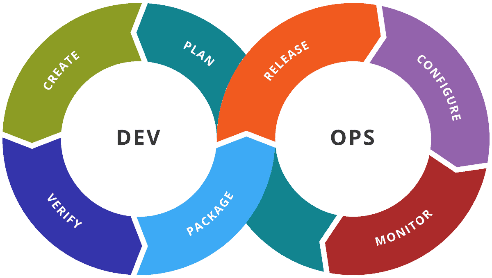

DevOps põhineb tarkvaraarenduse elutsükli automatiseerimist ja optimeerimist, et kood liiguks arendusest tootmisse kiiresti, usaldusväärselt ja
turvaliselt. See integreerib arendus- (Dev) ja operatsioonimeeskonnad (Ops), et lihtsustada tarkvara arendust. DevOps keskendub koostööle,
automatiseerimisele ja pidevale tagasisidele olulistele etappidele: planeerimise, kodeerimise, ehitamise, testimise, väljalastamine,
rakendamine, kasutamine ja järelevalve käigus, mis toimuvad pidevas tsüklis.
Keskendutakse äri vajaduste mõistmisele ja lõppkasutajate tagasiside kogumisele. Mooskonnad koostavad äriplaane, mis seob projekti kooskõlas äri
eesmärkidega ja tagab soovitud eesmärkide saavutamise.
Arendajad kirjutavad tarkvara tegeliku koodi.
Kirjutatud kood saadetakse see tsentraalsesse süsteemi, mis tagab, et kood kompileeritakse ja kõik komponendid integreeritakse sujuvalt.
Testitakse tarkvara, et veenduda selle nõuetekohast toimimist. Sisaldab erinevaid teste, nagu turvalisus, jõudlus ja kasutajate rahulolu.
Pärast testimist on tarkvara valmis tootmisse laskmiseks, meeskond tagab, et kõik kontrollid on läbitud, ja saadab seejärel viimase versiooni
tootmiskeskkonda.
Infrastructure-as-Code (IaC) tööriistade abil luuakse automaatselt vajalik infrastruktuur ja võetakse kood kasutusele erinevates keskkondades
automatiseeritud ja korrataval viisil.
Pärast rakendamist on tarkvara kasutajatele kättesaadav. Erinevate tööriistade abil saadakse hallata süsteemi konfiguratsiooni ja jätkuvat
kasutuselevõttu, et tagada selle sujuv toimimine.
Jälgitakse kuidas tarkvara tegelikult toimib, kogutakse andmeid kasutajate käitumise ja rakenduse toimivuse kohta, et tuvastada võimalikke probleeme
või probleeme. Süsteemi jälgimise abil saab meeskond kiiresti avastada ja parandada probleeme, mis võivad mõjutada toimivust.

Automatiseerimine on oluline osa tarkvaraarenduses.
Laiendab kasutusala.
Süsteeme tuleb pidevalt arendada.
| HEAD | VEAD |
|---|---|
| Parem koostöö | Esialgsed rakendamisega seotud väljakutsed |
| Kiirem kohaletoimetamine | |
| Efektiivsus | Turvalisuse probleemid |
| Kvaliteedi tagamine | Kulude kaalutlused |
| Skaalautuvus ja paindlikkus | Jätkuv kontroll ja hooldus |
| Suurem klientide rahulolu | Tööriistakompleksi keerukus |
| Innovatsioon | Juurdepääsu kontroll ja õigused |
| Ressursside optimeerimine | |
| Rahvusvaheline koostöö |